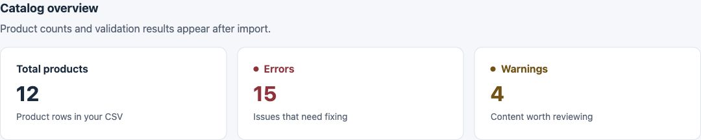
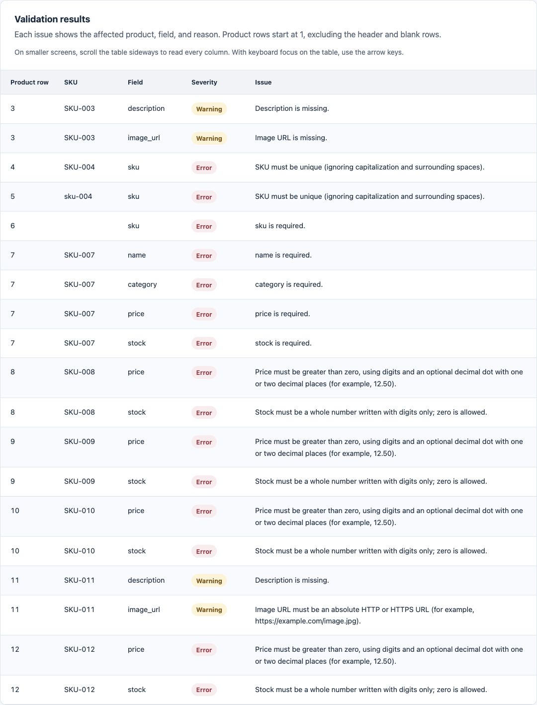

01 / Browser-based tool
Content QA Tool
Validate product catalogs before publishing. Find missing fields, duplicate SKUs and formatting issues, then export a focused report for correction.
Explore the case studyDigital work / 01 project
Practical tools for clearer content
and better digital workflows.


01 / Browser-based tool
Validate product catalogs before publishing. Find missing fields, duplicate SKUs and formatting issues, then export a focused report for correction.
Explore the case studyThis collection brings together completed digital work, with the problem, implementation and testing behind each project. Start with Content QA Tool: a small, focused application for reviewing product data.